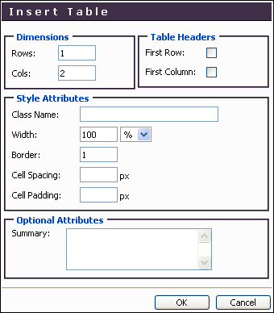
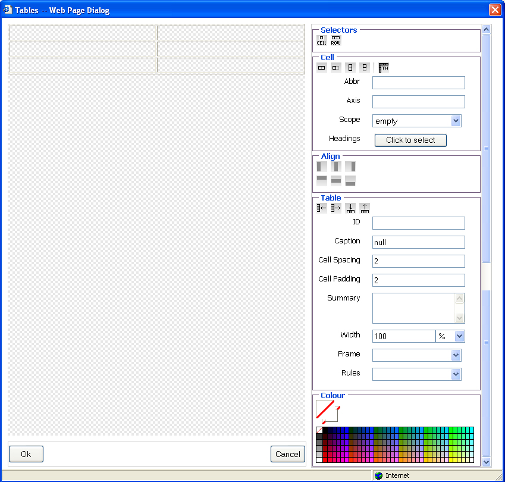
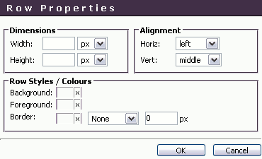
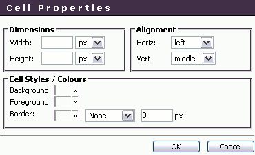
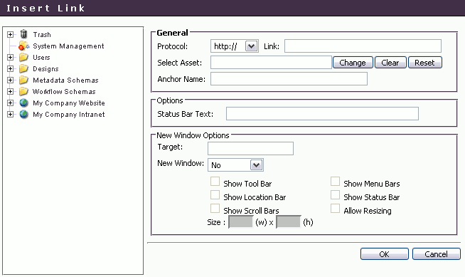
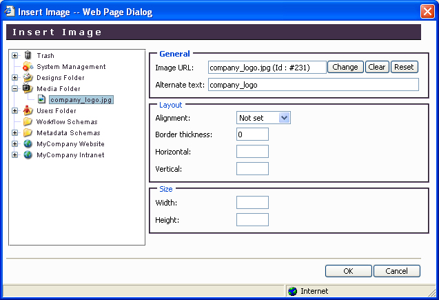

Welcome to MySource Matrix WYSIWYG Editor Help
If you set the content type for a division to WYSIWYG, the Edit Contents icon is displayed. Click this icon to switch into the WYSIWYG editor.
You can now enter your content.
TIP: Many of the icons are the same as those used in Microsoft Office applications. Hold your mouse over the icon to show help on the function of that icon.
The non-standard buttons have the following functions:
| Icon |
Function |
Description |
|
Table Functions |
Allows you to insert a new table, edit table properties or remove the cell borders. |
|
Row Functions |
Allows you to edit the properties of a row in a nested table, insert, delete, split or merge a row. |
|
Column Functions |
Allows you to insert, delete or split a column in a nested table. |
|
Cell Functions |
Allows you to edit the properties of a cell in a nested table, insert, delete, split or merge a cell. |
|
Font Colour |
Allows you to change the font colour. |
|
Background Colour |
Allows you to change the background colour. |
|
Insert Link |
Allows you to insert a link to an external site or any asset. |
|
Remove Link |
Removes a link. |
|
Insert Anchor |
Allows you to insert an anchor. |
|
Embed Movie |
Allows you to embed a movie file. |
|
Insert Image |
Allows you to embed an image file. |
|
Check Spelling |
Check the spelling of the text on the page. |
|
Toggle HTML Source |
Toggles between the HTML source view and the WYSIWYG view. |
We will now discuss Insert Table, Table Properties, Row Properties, Cell Properties, Insert Link and Insert Image in more detail.
Insert Table
Click on the Table Functions icon , followed by Insert Table on the drop down menu. The following pop-up window is displayed:

- Rows: enter the number of rows for your new table.
- Cols: enter the number of columns for your table.
- Spacing: this attribute defines the amount of space between the cells in the table. Enter a pixel value for the desired amount of cell spacing.
- Padding: this attribute defines the amount of space between the edges of the cells and the contents of the cell. Enter a pixel value for the desired amount of cell padding.
- Width: this attribute defines the width of the table on the page. You can enter a value that is either the exact width of the table (in pixels), or a percentage of the current screen width, by adding “%” at the end of the width.
TIP: If you enter a percentage of the current screen width, the width of the table will change if the window is resized.
- Borders: this attribute indicates the width of the table border in pixels. You can set the value to 0 to display the table with no border.
TIP: If no border setting is entered, newer browsers will display a one-pixel border by default.
Table Properties
Click on the Table Functions icon , followed by Table Properties on the drop down menu. The following pop-up window is displayed:

- Width: this attribute defines the width of the table on the page. You can enter a value that is either the exact width of the table (in pixels), or a percentage of the current screen width, by adding “%” at the end of the width.
TIP: If you enter a percentage of the current screen width, the width of the table will change if the window is resized.
- Height: enter the height of the table in pixels or as a percentage of the current screen height, by adding “%” at the end of the height.
- Spacing: this attribute defines the amount of space between the cells in the table. Enter a pixel value for the desired amount of cell spacing.
- Padding: this attribute defines the amount of space between the edges of the cells and the contents of the cell. Enter a pixel value for the desired amount of cell padding.
- Borders: this attribute indicates the width of the table border in pixels. You can set the value to 0 to display the table with no border, or select the Table Properties icon followed by the Show 0 Borders menu option.
TIP: If no border setting is entered, newer browsers will display a one-pixel border by default.
- Frames: this attribute allows you to set frames for any of the sides of the cells within the nested table.
- Rules: this attribute allows you to set a rule between rows, columns or between both rows and columns.
- Background: select a background colour to apply to the whole table. Click on the “x” to bring up the colour picker.
- Foreground: select a foreground colour to apply to the whole table. Click on the “x” to bring up the colour picker.
- Border: select a colour to apply to the table border. Click on the “x” to bring up the colour picker, and set style and the width of the border (in pixels).
TIP: To set the horizontal alignment of your table on the page, use the WYSIWYG icons for justifying
.
For example, to centre your table on the page, select the Justify Centre icon .
Row Properties
Edit the row properties as required on the Row Properties pop-up window shown below:

- Width: this attribute defines the width of the row on the page. You can enter a value that is either the exact width of the row (in pixels), or a percentage of the current screen width, by adding “%” at the end of the width.
TIP: If you enter a percentage of the current screen width, the width of the row will change if the window is resized.
- Height: enter the height of the row in pixels or as a percentage of the current screen height, by adding “%” at the end of the height.
- Padding: this attribute defines the amount of space between the edges of the cells and the contents of the cell. Enter a pixel value for the desired amount of cell padding.
- Horizontal Alignment: select from Left, Centre or Right to align the text in the cells in this row horizontally. By default, text is aligned to the left.
- Vertical Alignment: select from Top, Middle or Bottom to align the text in the cells in this row vertically. By default, text is aligned to the centre.
- Background: select a background colour to apply to the whole row. Click on the “x” to bring up the colour picker.
- Foreground: select a foreground colour to apply to the whole row. Click on the “x” to bring up the colour picker.
- Border: select a colour to apply to the row border. Click on the “x” to bring up the colour picker, and set style and the width of the border (in pixels).
Cell Properties

The cell properties are the same as the row properties, but apply to the selected cell only.
Insert Link
To add a hyperlink, select a piece of text and then the Insert Link icon. The following pop-up window is displayed:

You can insert a link to any external URL, or any internal asset. The options are as follows:
General
- Protocol: select the protocol from the following options:
- http:// Used to create a link to a web page with a normal connection
- https:// Used to create a link to a web page with a secure connection using SSL
- ftp:// Used to create a link to an ftp server
- mailto: Used to create a link to an email address
- Link: enter the address of the link as appropriate for the protocol you select. E. g. if the protocol is http:// the link might be http://www.squiz.net. If the protocol you select is mailto: the link might be person@yoursite.com
- Select Asset: you can select a MySource Matrix asset to which to link. Move your cursor over to the asset tree to select the appropriate asset — only relevant asset types are now selectable (for example, you cannot link to a user). Hold the right mouse button down on the name of the asset you wish to select, and right click on the Use Me menu option. The Name and Asset ID of this asset now appear in the text box.
- Anchor Name: type the name of an anchor on the linked external page, or MySource Matrix page asset.
Options
- Status Bar Text: enter optional text to be displayed in the status bar at the bottom of the window.
New Window Options
Select whether to show the linked asset or URL in a new window or the current one. If you select Yes to show a new window, you can select whether or not to show the tool bar, menu bars, location bar, status bar or scroll bars and whether the window is resizable or not. You can determine the exact size of the new browser window by specifying the height and width in pixels.
TIP: It is good practice to open your file in a new window rather than in the same browser window as the one displaying the web page. This allows users to resize and in particular print the document separately.
Insert Image
If you select the Insert Image icon, the following pop-up window is displayed:

TIP: In order to insert an image into your page content, you must firstly add the image to MySource Matrix. You do this by selecting Add → Files → Image.
The options when inserting an image are as follows:
General
- Image URL: to select an image file to embed, move your cursor over to the asset tree to select the appropriate image — only images are selectable. Hold the right mouse button down on the name of the image you wish to insert, and right click on the Use Me menu option. The Name and Asset ID of this image asset now appear in the text box.
- Alternate Text: enter the alternate text for the image into this box.
Layout
- Alignment: enter the width in pixels of the movie.
- Border Thickness: enter the height in pixels of the movie.
- Horizontal: enter the spacing to be applied to the left and right of the image.
- Vertical: enter the spacing to be applied to the top and bottom of the image.
Size
- Width: enter the width of the image in pixels.
- Height: enter the height of the image in pixels.
|